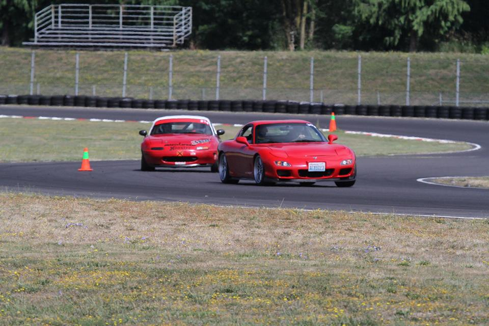

My name is Chance, I am currently a student at a programming school called Epicodus in Portland, Oregon. I have lived in the Northwest all my life but have been fortunate enough to have travelled to many places over the world. I decided to pursue becoming a programmer when I discovered how much I enjoyed working on challenging projects. With my previous job leaving me wanting more, I began exploring and quickly found myself drawn to programming.
"I knew programming was what I wanted to do when I found myself staying up late having fun playing with code."
I didn't waste time, I sold my personal race car to fund this carreer change, applied at Epicodus and turned in my resignation letter.
My background began in the automotive world. I started while completing highschool as a car electronics installer. I learned while in school how to install various electronics into vehicles.
I then was fortunate enough to get a entry level job as a automotive technician. This job was great as they would not only train me on the job but also pay for classses to help me progress.
After 5 years learning and reparing vehicles, I decided to stay in the auto industry just move to a "cleaner" envirement. I got a job processing vehicles into the country. After 2 years I was promoted to supervisor. Unfortunetly I found myself bored and left with little challenge which led me to where I am now.
I am currently a student at Epicodus where I hope to jumpstart my career in programming.

Interest and hobbies aside from programming are all over the place. I enjoy spending time with my family, traveling, working/building/racing cars, gaming and building computers.
My main hobby would have to be in short, cars. I put together my own race car from practically the ground up that I take for cruises, races and car shows. My work stood out and I ended up being noticed in the car community, which led to me taking on huge projects that required extensive planning and building along with its fair share of troubleshooting....sounds a lot like programming.
My work will be updating as more projects are completed, so please check back often. My contact info is found on the upper right hand side of this page.